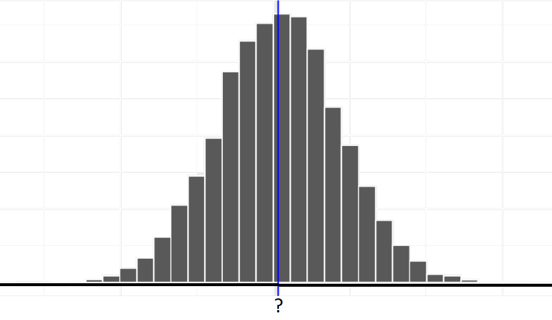
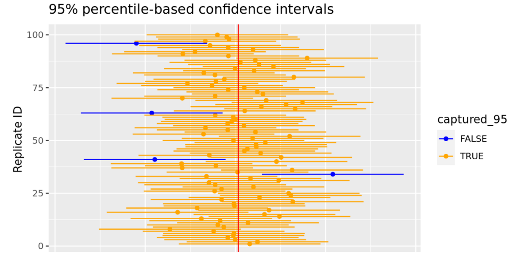

Confidence Intervals
Chapter 10
(Part 2)
Why do we need CIs?
Reporting a range of values via a confidence interval takes into account the uncertainty (sampling variation) associated with the fact that we are observing a single random sample.
- We know a sampling distribution (thousands of replicate samples) center around the population parameter.
- We don’t know the true value of the population parameter.
- We know a sampling distribution is normally distributed (CLT)
- We have no idea where our single sample falls in the sampling distribution (close to the population parameter or far away).
. . .


Check your understanding

When we use a \(95\%\) critical value, approximately \(95\%\) of the confidence intervals contain the true population parameter (e.g. \(\mu\), \(\mu_1 - \mu_2\), \(\pi\), etc).
Say we generate 20,000 sample means and construct a 95% CI for each sample. How many of the constructed confidence intervals do you expect to contain the true population mean?
. . .
- We EXPECT 20000*.95 = 19,000 of the constructed confidence intervals to contain the true population mean.
Width of an Interval (Margin of Error)
\[\mathbf{\hbox{Margin of Error}} = \hbox{Critical Value} * SE(\hbox{Estimator})\]
. . .
There is a trade-off between the width of an interval and the level of confidence (critical value).
- Using a lower CI (ex: 90% vs 95%) decreases the margin of error (narrower interval), but a narrower CI increase the chance that your interval will not capture the true mean.
- A 99% CI has a higher chance of capturing the true mean than a 95% CI, but it might be too wide of an interval to be practically useful.
- You can also decrease the margin of error by increasing sample size.
Example
You sample 80 newborn babies and calculate a mean weight of 7.5 pounds and standard deviation of 0.7 pounds.
We want to construct a 95% confidence interval for the population mean.
Given values: \(\bar{x} = 7.5\), \(s = 0.7\)
Calculate SE: \(SE = \frac{0.7}{\sqrt{80}} = 0.078\)
Calculate Critical Value:
qt(p=0.025, df=79)\(= -1.99\)Resulting CI: \(7.5 \pm 1.99*0.078 = [7.34, 7.66]\)
Construct a 90% confidence interval instead. The sample mean weight is still 7.5 pounds and sample standard deviation is 0.7 pounds and n = 80.
Given values: \(\bar{x} = 7.5\), \(s = 0.7\)
Calculate SE: \(SE = \frac{0.7}{\sqrt{80}} = 0.078\)
Calculate Critical Value:
qt(p=0.05, df=79)\(= -1.66\)Resulting CI: \(7.5 \pm 1.66*0.078 = [7.37, 7.62]\)
Increase the sample size to 200 newborn babies. The sample mean weight is still 7.5 pounds and sample standard deviation is 0.7 pounds.
Construct a 95% confidence interval for the population mean.
Given values: \(\bar{x} = 7.5\), \(s = 0.7\)
Calculate SE: \(SE = \frac{0.7}{\sqrt{200}} = 0.0495\)
Calculate Critical Value:
qt(p=0.025,df=199)\(= -1.97\)Resulting CI: \(7.5 \pm 1.97*0.0495 = [7.40, 7.60]\)
R Code to obtain CIs from data sets
| Statistic | R Code |
|---|---|
| Mean | t.test(x = data$variable, conf.level = 0.95) |
| Proportion | prop.test(x = #, n = #, conf.level = 0.95, correct=FALSE) |
| Diff in mean | t.test(x = data1$variable, y = data2$variable, conf.level = 0.95) |
| Diff in proportion | prop.test(x = c(#, #), n = c(#, #), conf.level = 0.95, correct=FALSE ) |
| Regression | confint(model, level = 0.95) |